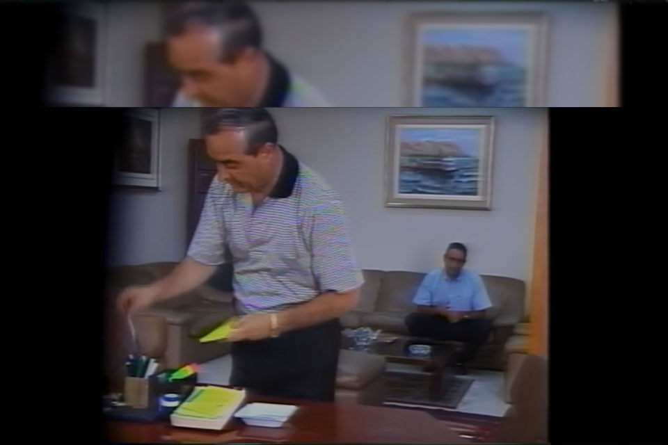
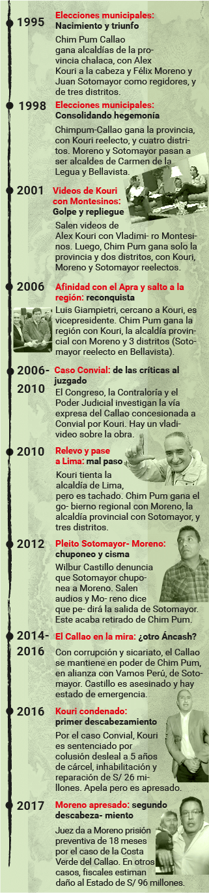

Veintidós años gobernando la región suman casos de corrupción que golpean al controversial movimiento político, que pasa de las urnas a los tribunales.

Una fórmula ganadora en problemas
El éxito de Chimpum se basó en candidatos hábiles, una maquinaria de operadores y una oposición débil, según el politólogo José Carlos Rojas, estudioso del movimiento chalaco. Pero anota que la fórmula se desbordó.
La cúpula en la mira de la justicia
Su presidente está preso y la plana mayor registrada en el JNE es investigada por la Fiscalía
Hegemonía chimpunera, competidores lejanos
Diez momentos en la historia de Chimpum Callao

Autoridades chalacas electas por Chimpum Callao
Walter Mori Rodríguez, gobernador regional del Callao
Encargado del gobierno regional luego de la suspensión de Félix Moreno por su prisión preventiva. Enfrenta una inhabilitación para la función pública impuesta por la Contraloría por supuestas contrataciones fantasma cuando fue presidente del Cafed, entidad del Gobierno Regional para proyectos educativos. La Fiscalía lo investiga por este caso y por la refacción del Instituto Simón Bolívar, en Bellavista, por aprobar partidas que ya se habrían ejecutado. Saldría del cargo cuando retorne Moreno.
Omar Marcos Arteaga, alcalde de Ventanilla
Renunció a Chimpum en el 2015, alegando falta de apoyo del Gobierno Regional, pero otro motivo sería que la alianza electoral con Vamos Perú evitó que tiente la alcaldía provincial. Alista su movimiento Fuerza Chalaca con miras a la provincial. Es investigado por presunto enriquecimiento ilícito: según la fiscalía, tiene desbalance patrimonial de 663 mil soles.